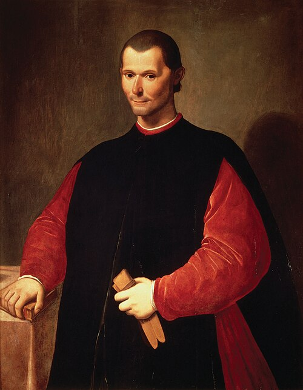

Modernidade: Política
08/09/2026
Maquiavel: Realismo político
- Um governante deve fazer o que é moralmente correto ou aquilo que é necessário para manter o Estado?
- Segundo Maquiavel, a política possui uma lógica própria, diferente da moral individual.
Todavia, como é meu intento escrever coisa útil para os que se interessarem, pareceu-me mais conveniente procurar a verdade pelo efeito das coisas, do que pelo que delas se possa imaginar. E muita gente imaginou repúblicas e principados que nunca se viram nem jamais foram reconhecidos como verdadeiros. Vai tanta diferença como se vive e como se deveria viver. (Maquiavel, O Príncipe, Cap. XV)
Nicolau Maquiavel (1469-1527)
- Nasceu e viveu em Florença, na Itália renascentista. A Itália ainda não era um Estado nacional unificado.
- Maquiavel participou diretamente da vida política de Florença.
- Escreveu O Príncipe em um contexto de intensa instabilidade.
- Realismo político: É considerado um dos fundadores da filosofia política moderna por deslocar o foco do governo ideal (Platão, Aristóteles) para a análise da realidade efetiva do poder político.
- Sua análise política baseia-se, portanto, em elementos concretos do dia-a-dia do governante, tais como: disputa pelo poder, conflitos entre grupos, interesses, ambição, alianças, circunstâncias históricas, manutenção do Estado etc.
- Autonomia da política: a eficácia política é imperativa sobre a virtude moral.
- ⚠️ Isso não significa que “qualquer coisa é permitida”, mas que a conservação do Estado tem primazia sobre a moral convencional.

Nicolau Maquiavel (1469-1527)
- Virtù vs. Fortuna
- Virtù: não é virtude moral, mas a capacidade e astúcia do governante para agir com eficácia diante das circunstâncias.
- Fortuna: o acaso, as circunstâncias imprevisíveis. Maquiavel a compara a um rio: a virtù pode contê-lo em parte, mas nunca dominá-lo.
- Ser amado vs. ser temido
- Entre ser amado e ser temido, é mais seguro ser temido: o amor é um vínculo frágil; o temor, sustentado pelo medo do castigo, não falha.
- Ainda assim, o governante deve evitar a todo custo ser odiado, que representa o maior risco à permanência no poder.
Questões do Enem
Acompanhe pelo celular

bit.ly/filosofia-vc
Questão 1
Não ignoro que muitos foram e são de opinião de que as coisas do mundo são governadas de tal modo pela fortuna e por Deus e que os homens não podem corrigi-las com a prudência, e até não têm remédio algum contra eles. Por isso, poder-se-ia julgar que não devemos incomodar-nos demais com as coisas, mas deixar-nos governar à sorte.
MAQUIAVEL, N. O Príncipe. São Paulo: Martins Fontes, 2010.
Diante dessas reflexões de Maquiavel, qual é a função do livre-arbítrio nos domínios da política?
A Aplacar a aspiração de poder dos súditos.
B Orientar o soberano no campo das incertezas.
C Estabilizar a administração por meio do diálogo.
D Relativizar os valores morais no escopo das tradições.
E Aprimorar o espírito bélico para a conquista de territórios.
Questão 2
A um príncipe, portanto, não é necessário ter de fato todas as qualidades, mas é indispensável parecer tê-las. Aliás, ousarei dizer que, se as tiver e utilizar sempre, serão danosas, enquanto, se parecer tê-las, serão úteis. Assim, deves parecer clemente, fiel, humano, íntegro, religioso — e sê-lo, mas com a condição de estares com o ânimo disposto a, quando necessário, não o seres, de modo que possas e saibas como tornar-te o contrário.
MAQUIAVEL, N. O príncipe. São Paulo: Martins Fontes, 2004 (adaptado).
Segundo o autor, a conquista e a conservação do poder político exigem a
A flexibilidade moral do monarca.
B retomada dos valores cristãos.
C consulta periódica dos cidadãos.
D adoção do imperativo categórico.
E liberdade incondicional do estadista.
Questão 3
Para Maquiavel, quando um homem decide dizer a verdade pondo em risco a própria integridade física, tal resolução diz respeito apenas a sua pessoa. Mas se esse mesmo homem é um chefe de Estado, os critérios pessoais não são mais adequados para decidir sobre ações cujas consequências se tornam tão amplas, já que o prejuízo não será apenas individual, mas coletivo. Nesse caso, conforme as circunstâncias e os fins a serem atingidos, pode-se decidir que o melhor para o bem comum seja mentir.
ARANHA, M. L. Maquiavel: a lógica da força.São Paulo: Moderna, 2006 (adaptado).
O texto aponta uma inovação na teoria política na época moderna expressa na distinção entre
A idealidade e efetividade da moral.
B nulidade e preservabilidade da liberdade.
C ilegalidade e legitimidade do governante.
D verificabilidade e possibilidade da verdade.
E objetividade e subjetividade do conhecimento.
Questão 4
TEXTO I
A diferença entre um e outro homem não é suficientemente considerável para que qualquer um possa com base nela reclamar qualquer benefício a que o outro não possa também aspirar, tal como ele. Portanto, se dois homens desejam a mesma coisa, ao mesmo tempo em que é impossível ela ser gozada por ambos, eles tornam-se inimigos.
HOBBES, T. Leviatã. São Paulo: Abril, 1980.
TEXTO II
Nada é mais meigo do que o homem em seu estado primitivo, quando, colocado pela natureza entre a estupidez dos brutos e as luzes funestas do homem civil, e compelido tanto pelo instinto quanto pela razão a defender-se do mal que o ameaça, é impedido pela piedade natural de fazer mal a alguém sem ser a isso levado por alguma coisa ou mesmo depois de atingido por algum mal.
ROUSSEAU, J.-J. Discurso sobre a origem e os fundamentos da desigualdade entre os homens. São Paulo: Abril, 1978.
Comparando-se os textos dos contratualistas, verifica-se que eles apresentam um traço constitutivo dos homens no estado de natureza, caracterizado pela
A tendência à autopreservação.
B expressão da inocência.
C condição de igualdade.
D estima à propriedade.
E vontade de poder.
Questão 5
A filosofia encontra-se escrita neste grande livro que continuamente se abre perante nossos olhos (isto é, o universo), que não se pode compreender antes de entender a língua e conhecer os caracteres com os quais está escrito. Ele está escrito em língua matemática, os caracteres são triângulos, circunferências e outras figuras geométricas, sem cujos meios é impossível entender humanamente as palavras; sem eles, vagamos perdidos dentro de um obscuro labirinto.
GALILEI, G. O ensaiador. Os pensadores. São Paulo: Abril Cultural, 1978.
No contexto da Revolução Científica do século XVII, assumir a posição de Galileu significava defender a:
A continuidade do vínculo entre ciência e fé dominante na Idade Média.
B necessidade de o estudo linguístico ser acompanhado do exame matemático.
C oposição da nova física quantitativa aos pressupostos da filosofia escolástica.
D importância da independência da investigação científica pretendida pela Igreja.
E inadequação da matemática para elaborar uma explicação racional da natureza.